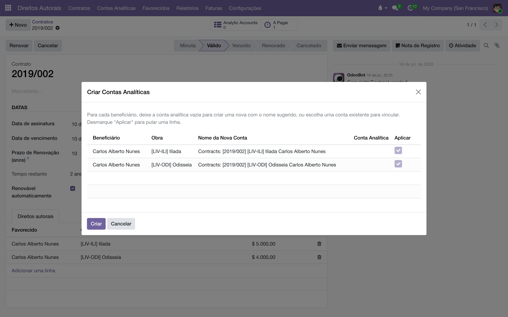
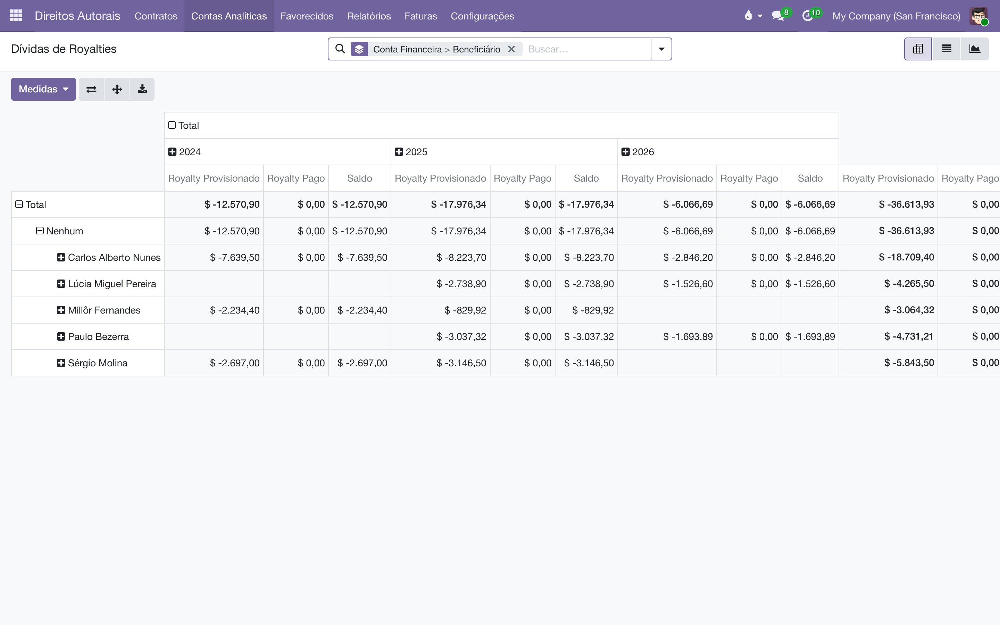

Apure automaticamente quanto cada autor tem a receber: o módulo lê as vendas pagas de cada obra, aplica a faixa certa pelo total acumulado de exemplares e mantém o saldo de cada favorecido em uma conta própria.
Este módulo é o motor de cálculo da suíte de direitos autorais. O módulo base registra os termos do contrato; este transforma os termos em valores:
O saldo dessas contas é o que alimenta o Pagamento de royalties (que gera as faturas dos autores) e a Prestação de contas (o extrato em PDF).
Quase tudo neste módulo — menus, ações e colunas — é visível apenas para o grupo Administrador de Direitos Autorais. Usuários comuns continuam vendo os contratos normalmente, sem a parte contábil.
Para marcar uma venda como sendo de uma equipe, a fatura de cliente ganha o campo Equipe de Vendas (visível nas faturas de cliente, abaixo das condições de pagamento).
Antes de apurar qualquer valor, cada linha de royalty precisa da sua conta analítica.
Ao criar a conta, o Adiantamento Descontável da linha é lançado como um crédito de abertura, datado na assinatura do contrato. É isso que faz os royalties "pagarem" o adiantamento primeiro: enquanto o acumulado da obra não superar o valor adiantado, nada novo é devido. O lançamento é único por linha — se o adiantamento mudar, ele é atualizado; se for zerado, é removido.
Todas as contas de direitos autorais ficam reunidas em — o menu mostra apenas as contas nascidas no plano configurado, não o plano analítico da casa inteira.

A apuração lê as faturas de cliente pagas (ou em pagamento, ou estornadas) que vendem as obras do contrato e lança o royalty devido em cada conta analítica.
Também dá para apurar a partir das próprias faturas: em , selecione as faturas desejadas e use Ação ‣ Gerar Linhas Analíticas de Royalties — só as selecionadas são processadas.
Pode clicar quantas vezes quiser: a apuração é idempotente. Cada lançamento guarda a linha da fatura que o originou, e uma mesma linha de fatura nunca é lançada duas vezes na mesma conta. Rodar de novo só acrescenta o que for novo.
O percentual não é escolhido pelo tamanho de cada venda, e sim pelo total acumulado de exemplares vendidos da obra, contado na ordem das faturas. É assim que um contrato "sobe de faixa" no meio da vida:
Contrato com duas faixas: 0 a 100 exemplares → 7% e 101 em diante → 8%. O livro custa R$ 10,00.
| Fatura | Exemplares | Acumulado | Faixa | Base | Royalty |
|---|---|---|---|---|---|
| 1ª venda | 80 | 80 | 7% | R$ 800,00 | R$ 56,00 |
| 2ª venda | 40 | 120 | 8% | R$ 400,00 | R$ 32,00 |
A segunda venda inteira já é lançada a 8%, porque o acumulado (120) caiu na segunda faixa. Cada lançamento registra o percentual aplicado no campo % de royalty, então o extrato mostra exatamente a conta feita.
Por padrão, o royalty é calculado sobre o valor líquido faturado (depois do desconto da fatura). Se o contrato prevê percentual sobre o preço de capa, marque Sobre o Preço de Venda na linha de royalty (dentro do formulário da linha, visível para administradores): a base passa a ser o preço unitário × quantidade, antes do desconto.
Vendas especiais são a exceção: vendas feitas por uma das Equipes de Vendas Especiais com desconto igual ou maior que o mínimo configurado são sempre calculadas sobre o valor líquido, mesmo com Sobre o Preço de Venda marcado. O botão inteligente Vendas Especiais no contrato (e no cadastro da empresa e do favorecido) abre a lista dessas faturas.
10 exemplares a R$ 10,00 com 50% de desconto, faixa de 7%: pela base líquida o royalty é 7% de R$ 50,00 = R$ 3,50; com Sobre o Preço de Venda, 7% de R$ 100,00 = R$ 7,00. Se essa venda for de uma equipe especial qualificada, vale a base líquida (R$ 3,50) de qualquer forma.
Uma venda só gera royalty se a data da fatura cair dentro da vigência do contrato: entre a assinatura e o vencimento. Vendas anteriores à assinatura ou posteriores ao vencimento não geram nada — é isso que faz um contrato vencido parar de acumular valores novos sem perder o que ganhou enquanto vigorava. Um contrato cancelado não cobre venda nenhuma.
Se a apuração termina sem lançar nada, a notificação explica a causa em vez de dizer apenas "concluído": nenhuma linha tem conta analítica ainda; nenhuma fatura paga vende as obras (fatura apenas confirmada, sem pagamento, não conta); as linhas não têm faixas de percentual; todas as vendas estão fora da vigência; ou tudo o que havia já estava lançado. Leia a mensagem — ela aponta o que falta.
Cada linha de royalty tem uma Data do Último Pagamento. Ela funciona como uma régua de corte: tudo o que foi apurado até essa data (incluindo o adiantamento em recuperação) é considerado quitado, por um lançamento compensatório chamado "Pagamento" na conta analítica. O que sobra depois dela é o saldo em aberto.
No próprio contrato, a coluna Royalties em Aberto da lista (e o botão "Em Aberto" no formulário, com o módulo de pagamentos) mostra a soma dos saldos dos favorecidos daquele contrato.

A venda não gerou royalty. Verifique, nesta ordem: a fatura está paga (não apenas confirmada)? A linha de royalty tem conta analítica? Tem faixas cadastradas? A data da fatura cai dentro da vigência do contrato? A notificação da apuração indica qual desses é o caso.
O saldo aberto está menor do que as vendas sugerem. Provavelmente há um adiantamento descontável em recuperação (o crédito de abertura consome os primeiros royalties) ou um pagamento já quitou parte do período.
Rodei a apuração duas vezes — duplicou? Não. A guarda de idempotência impede o mesmo lançamento duas vezes; a segunda rodada apenas informa que tudo já estava lançado.
Um royalty antigo mudou de conta contábil sozinho. É a reclassificação diária: royalties atrasados além do limite de Reclassificar como passivo após migram da conta de despesa para a de passivo (e voltam, se forem quitados a tempo).
Todo documento do sistema carrega um prefixo na numeração — CO/2026/00001 é um acerto, AT/2026/00042 é um chamado. A lista é a mesma em todos os manuais:
| Prefixo | O que é |
|---|---|
C | Pedido de consignação: o pedido que põe livros na prateleira do cliente — C00001, no lugar do S da venda comum. |
CO/ | Consignação, o documento do acerto: registra o que o cliente vendeu e vira venda — CO/2026/00001. |
CR/ | Retorno de consignação: o documento que pede a devolução dos exemplares da prateleira — CR/2026/00001. |
CA | Auditoria de consignação: reconstrói o saldo da prateleira do cliente pelas notas fiscais e registra o ajuste — CA00001. |
CP/ | Campanha de consignação: o sortimento-alvo por canal — quantos exemplares de cada título as prateleiras devem ter — CP/2026/0001. |
AC/ | Acordo de Consignação: o contrato com a livraria, dono da prateleira — AC/2026/00001. |
COM/OUT/ | A série da remessa de consignação ao cliente, do armazém à livraria — COM/OUT/2026/00001, no espelho do WH/OUT. |
COM/MOV/ | A série dos fluxos internos de prateleira da consignação — COM/MOV/2026/00001. |
COM/IN/ | A série do retorno de consignação, da prateleira ao armazém — COM/IN/2026/00001, no espelho do WH/IN. |
REM/ | Remessa: a nota de simples remessa, sem cobrança — a numeração vem do diário fiscal REM. |
COL/ | Coleta: o lote do pedido de coleta às transportadoras — COL/2026/00001. |
AT/ | Atendimento: o chamado nascido do e-mail comercial — AT/2026/00001. |
MBX/ | O lote de envio de metadados à Metabooks — MBX/2026/00001. |
Impostos de Direitos Autorais/ | O lote da fatura acumuladora do IRRF retido dos autores no mês. |
Royalties entre Empresas/ | O lote da fatura acumuladora de royalties entre as empresas da casa. |
| Do próprio Odoo | |
S | Pedido de venda comum — S00001; o pedido de consignação usa o C no lugar. |
WH/OUT | Entrega comum do armazém: a transferência de saída padrão do Odoo. |
WH/IN | Recebimento do armazém: a transferência de entrada padrão do Odoo. |
Bases antigas guardam transferências nas séries COM/ e RET/, de antes da separação por direção — o histórico não é renumerado.
Manual completo, com busca e as demais páginas: Cálculo de royalties.